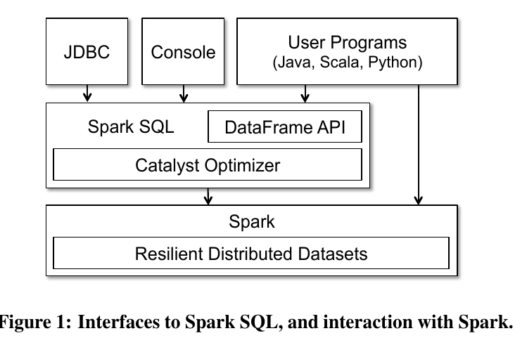

Spark SQL 笔记
Posted on Sun 25 June 2017 in Tech
Spark SQL Overview
特性：
- Spark SQL是Apache Spark中的一个新模块
- 将关系处理（tables with rows/columns）与Spark的功能编程API相集成
- 通过 SQL 操作 RDDs， 同时提供多种语言绑定
- 数据源集成：Hive, Parquet, JSON,and more
- 提供 JDBC/ODBC 接口供外部程序调用（商业智能、olap分析）
目标：
- 写更少的代码
- 读更少的数据
- 获得更高的性能
Spark SQL in Spark

- Spark SQL was first released in Spark 1.0 (May, 2014)
Relationship to Shark
Spark上的第一个关系数据库是Shark，它修改了Apache Hive系统，使之能在Spark上运行，并通过Spark引擎实现了传统的RDBMS优化。
虽然Shark表现出良好的表现和与Spark计划融合的良好机会，但它有三个重要挑战：
- Shark只能用于查询存储在Hive目录中的外部数据
- Spark程序调用Shark的唯一方法是组合一个SQL字符串
- Hive优化器是针对MapReduce量身定制的，难以扩展，难以构建新功能
Relationship to Shark
借鉴：
- hive 数据源的加载
- 使用列存储实现内存中的“缓存”
- UDFs
新增：
- 支持Spark程序（本地RDD），新的外部数据源的关系处理。
- 高级分析算法（如图形处理和机器学习）扩展。
Programming Interface

DataFrame
Spark SQL API中的主要抽象方法是DataFrame
- 取代了以前的（Spark < 1.3）SchemaRDD。
- 类似与R和pandas中的DataFrame，DataFrame等价于关系数据库中的表，每一列都有命名。但Spark SQL中的DataFrame基于RDD，是分布式的。RDD可以转换为DataFrame。
- DataFrame 支持多种数据类型与所有常见的关系运算符。
- Spark DataFrames是懒惰的，每个DataFrame对象都代表一个用于计算数据集的逻辑计划，但是直到用户调用特定的“输出操作”（如保存）才会执行任何执行。
- DataFrames提供与关系查询语言（如SQL和Pig）相同的操作。
Getting Started: Spark SQL
# Import Spark SQL
from pyspark.sql import HiveContext, Row
# Or if you can't include the hive requirements
from pyspark.sql import SQLContext, Row
hiveCtx = HiveContext(sc)
sqlCtx = SQLContext(sc)
As of Spark 2.0, HiveContext and SQLContext are replaced by SparkSession. However, we are keeping the class here for backward compatibility.
Getting Started: Spark SQL
from pyspark.sql import HiveContext
hiveCtx = HiveContext(sc)
rows = hiveCtx.sql("SELECT key, value FROM mytable")
keys = rows.map(lambda row: row[0])
input = hiveCtx.jsonFile(inputFile)
happyPeopleRDD = sc.parallelize([Row(name="holden", favouriteBeverage="coffee")])
happyPeopleSchemaRDD = hiveCtx.inferSchema(happyPeopleRDD)
happyPeopleSchemaRDD.registerTempTable("happy_people")
Catalyst Optimizer

Performance
Performance

参考
- ARMBRUST M, GHODSI A, ZAHARIA M. Spark SQL: Relational Data Processing in Spark[C]//ACM Press, 2015: 1383–1394.
- Spark快速大数据分析[M]. 人民邮电出版社, 2015.
- https://pandas.pydata.org/pandas-docs/stable/dsintro.html